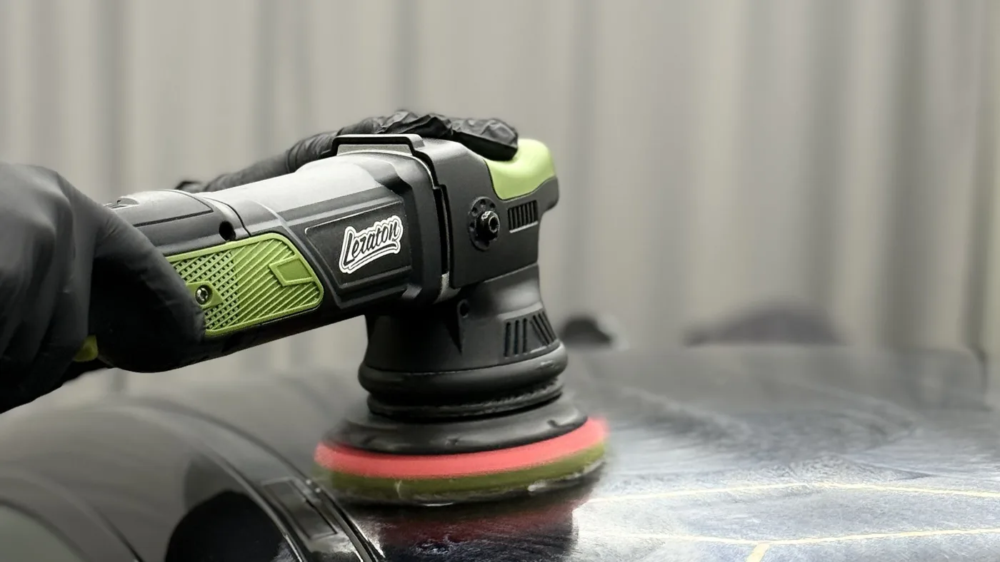
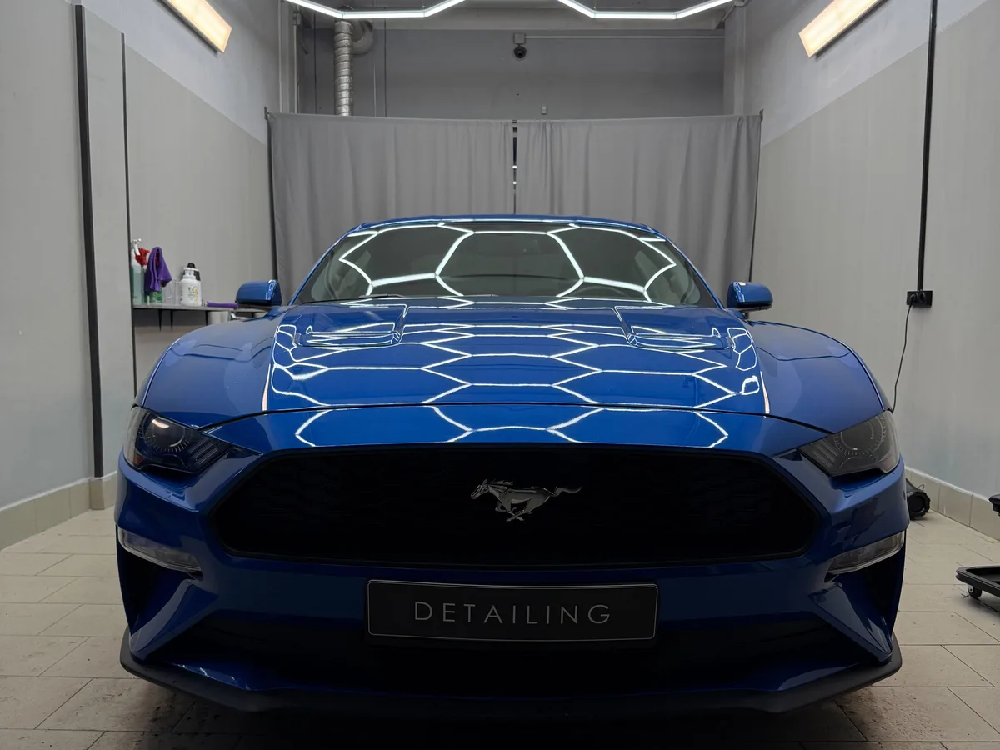
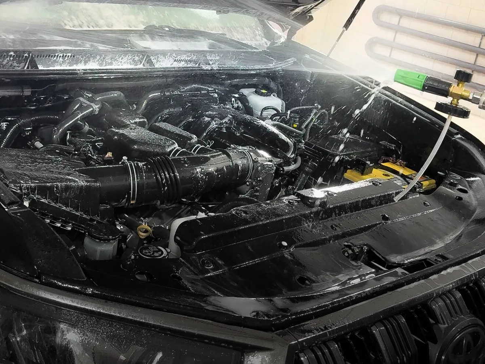
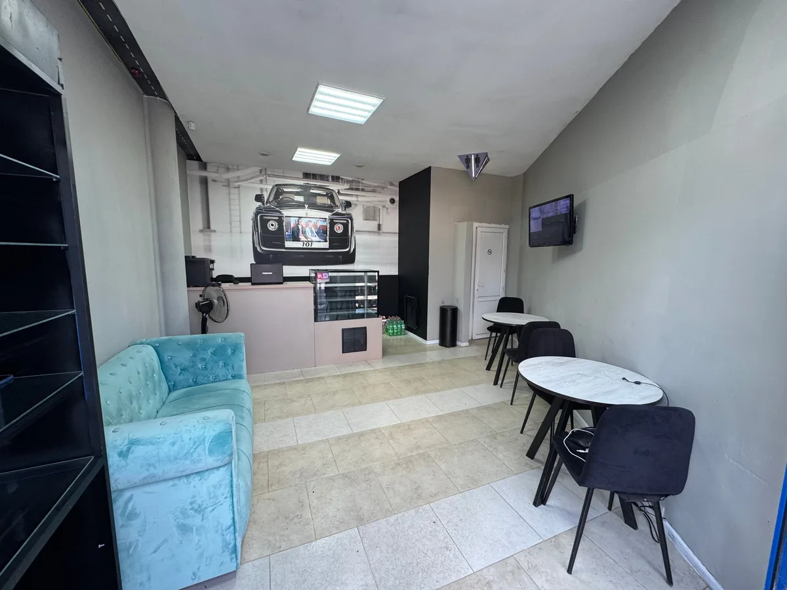

Автомойка и детейлинг · Калуга, Баррикад, 175
Мойка и детейлинг в Калуге: ежедневно до 23:00
Комплексная мойка, химчистка, полировка и керамика на Баррикад, 175. Запись на удобное время, цены выложены ниже.
- 5,0 на Яндекс Картах, 95 отзывов, награда «Хорошее место 2026»
- Мойка, химчистка, полировка, керамика
- Ежедневно с 9:00 до 23:00

Что входит в комплексы
Входит
- Стандартный комплекс: 2-фазная мойка, чистка дисков, пылесос, влажная уборка и стёкла
- Pro100 комплекс: 3-фазная мойка, дверные проёмы, глубокая чистка дисков и арок, багажник, детальная чистка салона, чернение резины
- Детейлинг комплекс: мойка с кварцем, мойка днища, химчистка кузова, керамика для стёкол, детейлинг салона и багажника
- Комната ожидания, туалет, Wi-Fi и парковка
Отдельно, если нужно
- Полировка кузова и керамика на кузов не входят в мойку, это отдельные услуги
- Для кроссоверов и внедорожников комплексы дороже на 250-1 000 ₽
- Мелкие услуги (воск, кварц, пылесос, стёкла) считаются отдельно, от 200 ₽
- Время работы и сумма зависят от состояния машины, их называют при записи
Цены на услуги
Цены по данным онлайн-записи студии, для легковых автомобилей. Время работы указано рядом с комплексом.
Мойка
- Экспресс-мойкабесконтактная мойка кузова в 1 фазу, пылесос полов, 15 минут500 ₽
- Стандартный комплекс2-фазная мойка, чистка дисков, пылесос, влажная уборка, стёкла, 45 минут1 500 ₽
- Pro100 комплекс3-фазная мойка, чистка дверных проёмов, дисков и арок, детальная чистка салона, 1 час 20 минут2 500 ₽
- Осенний комплекс2-фазная мойка с кварцем, антидождь на переднюю полусферу, озонация салона, 2 часа6 000 ₽
Детейлинг и химчистка
- Детейлинг комплексмойка с кварцем, днище, химчистка кузова, детейлинг салона и багажника, 3 часа10 000 ₽
- Химчистка кузова с кварцемудаление битума, следов насекомых и водного камня, 3 часа5 000 ₽
- Полная химчистка автомобиляцена с карточки на Яндекс Картах14 900 ₽
- Антидождькерамика для передней полусферы и боковых зеркал, 45 минут, цена зависит от объёмаот 2 500 ₽
Полировка
- Полировка одной детали30 минутот 1 500 ₽
- Полировка кузоваот 15 000 ₽
- Лёгкий комплекс по полировкехимчистка кузова, детейлинг салона, лёгкая полировка от паутин, керамикаот 18 000 ₽
- Полный комплекс по полировкеглубокая полировка, керамика, абразивная чистка стёкол от водного камняот 30 000 ₽
Для кроссоверов и внедорожников комплексы дороже на 250-1 000 ₽. Мелкие услуги (воск, кварц, пылесос, стёкла) стоят от 200 ₽. Точную сумму для вашей машины называют при записи.
Как проходит визит
- 01
Записались
Выбираете услугу, день и время в форме на сайте - запись уходит в WhatsApp. Марку машины напишите в сообщении.
- 02
Осмотр
Мастера осматривают машину и комментируют её состояние до работы.
- 03
Работа
Пока машину делают, можно подождать в комнате ожидания: кофемашина, туалет, Wi-Fi.
- 04
Выдача
Осматриваете результат на месте - то, на что вы укажете, исправляют сразу.



Что пишут клиенты
Приняли поздно вечером
«Ребята не отказали в поздний час без записи, и результат превзошёл все ожидания» - Денис, 25 апреля 2026.
Недочёты исправляют
«Мойщики аккуратные, недочёты исправляют моментально» - Dmitry Luzgan, 6 января 2026.
Есть где подождать
«Место отдыха с кофемашиной и уборной» - Екатерина Пронина, 7 декабря 2025.
Много входит в комплекс
«Я был удивлен сколько опций у них входит в комплексную мойку» - Артём рукаблуд, 9 июля 2025.
Отзывы с Яндекс.Карт
«Ребята очень внимательные и клиентоориентированные. Очистили въевшуюся грязь под ковриками, нанесли антидождь, предварительно очистив лобовое от водного камня, и антизапотеватель примерно идеально. Порадовало, что смогли выделить время на полный осмотр и комментарии по автомобилю как до химчистки, так и после.»
Иван Голубев · 13 июня 2026
«Мойка отличная. Брал детейлинг комплекс так как готовил машину на продажу. Помыли везде. Арки как новые, в салоне все щели вымыты. Грамотный персонал: всё рассказали и показали где и как чистили авто.»
Юрий Щ. · 16 июля 2025
«Все отлично! Помыли и пропылесосили внутри салон. Ребята помогли снять и поставить обратно детское кресло. Уютная комната ожидания, комфортно даже с годовалым ребенком.»
Екатерина С. · 27 января 2026
Отзывы с карточки на Яндекс.Картах, без правок.
Частые вопросы
Сколько стоит мойка?
Стандартный комплекс для легковой машины стоит 1 500 ₽ (45 минут), Pro100 комплекс - 2 500 ₽ (1 час 20 минут), экспресс-мойка - 500 ₽. Для кроссоверов и внедорожников комплексы дороже на 250-1 000 ₽.
Нужна ли запись?
У студии есть онлайн-запись, и клиенты пишут, что приезжают к назначенному времени. Один из них отмечает, что поздним вечером его приняли и без записи, но в загруженное время лучше записаться заранее.
До скольки вы работаете?
Ежедневно с 9:00 до 23:00, улица Баррикад, 175.
Делаете ли вы полировку и химчистку?
Да. Полировка одной детали - от 1 500 ₽, кузова - от 15 000 ₽, химчистка кузова с кварцем - 5 000 ₽, полная химчистка автомобиля - 14 900 ₽ по данным карточки на Яндекс Картах.
Можно ли подождать на месте?
Да, есть комната ожидания, туалет, Wi-Fi и парковка. Клиенты пишут про кофемашину и уютную обстановку.
Как оплатить?
На карточке указана оплата картой. Остальные способы уточняют при записи.
Запишитесь на мойку, химчистку или полировку
- Адрес
- улица Баррикад, 175, Калуга
- Часы
- ежедневно 09:00-23:00
- Телефон
- +7 (929) 033-33-50